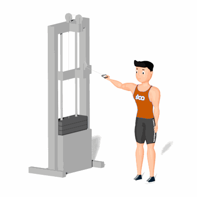

Rosca Unilateral na Polia Alta

O exercício trabalha o fortalecimento e hipertrofia dos músculos do bíceps.
Ficha Técnica
Tipo: Musculação
Grupo Muscular: Bíceps
Aparelho: Nenhum
Músculos: Nenhum
Como realizar
- Posicione de lado ao aparelho Cross Over;
- Posicione a roldana no mesmo nível dos ombros e segure a alça com a palma da mão voltada para cima;
- Braço paralelo ao chão e cotovelo estendido, essa é a posição inicial do exercício;
- Puxe a alça em direção ao corpo flexionando o cotovelo com a força do bíceps até que a mão fique próximo a cabeça;
- Afaste o pegador do corpo de maneira controlada retornando a posição inicial, repita os movimentos.
 RC STORE
RC STORE